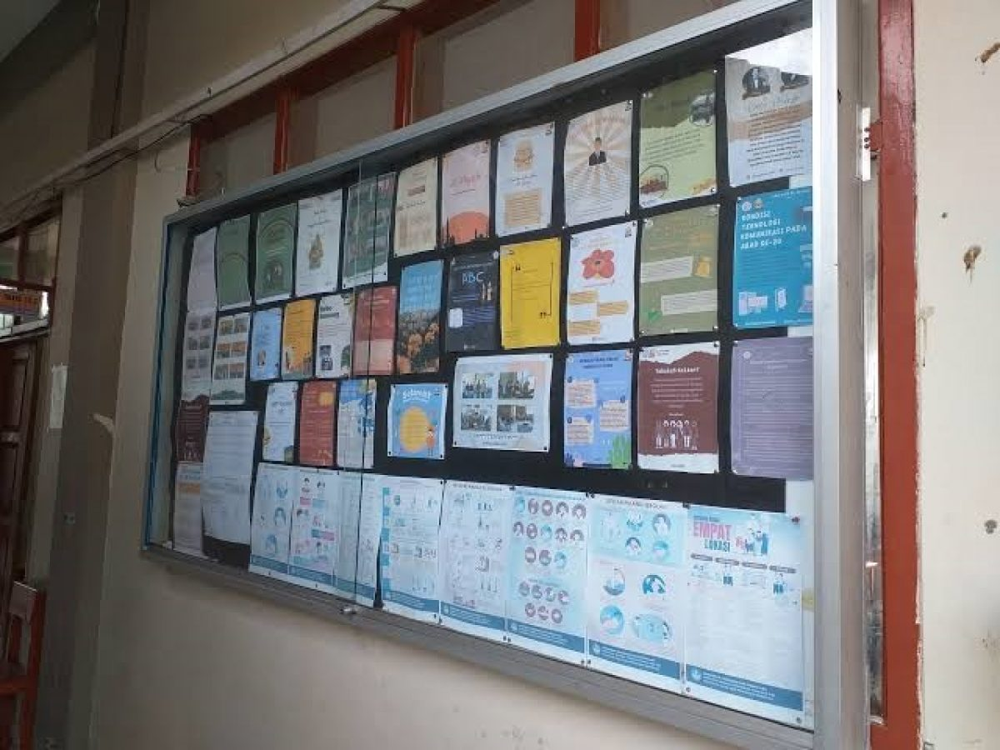
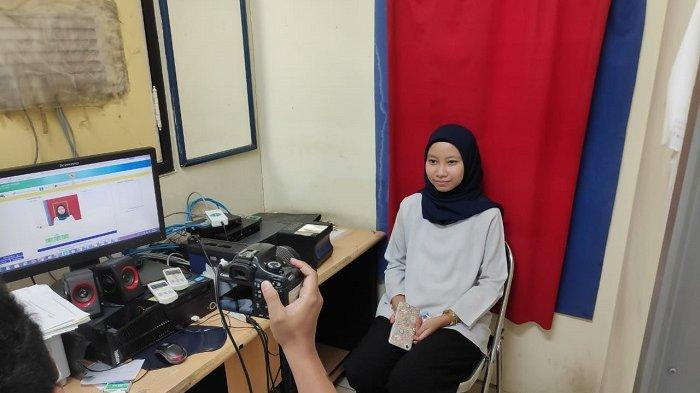

Layanan Desa

Informasi Publik
Menyediakan akses informasi penting terkait kegiatan desa, program pemerintah, dan berita terbaru untuk mendukung transparansi dan keterbukaan informasi.

Pelayanan Administrasi
Melayani berbagai kebutuhan administrasi desa, seperti pembuatan surat keterangan, pengurusan dokumen kependudukan, dan layanan lainnya dengan proses yang cepat dan mudah.

Jadwal Pelayanan
Pelayanan desa tersedia setiap hari Senin hingga Jumat, mulai pukul 08.00 pagi hingga 15.00 sore. Hari Sabtu, Minggu, dan hari libur nasional kantor desa tidak beroperasi.